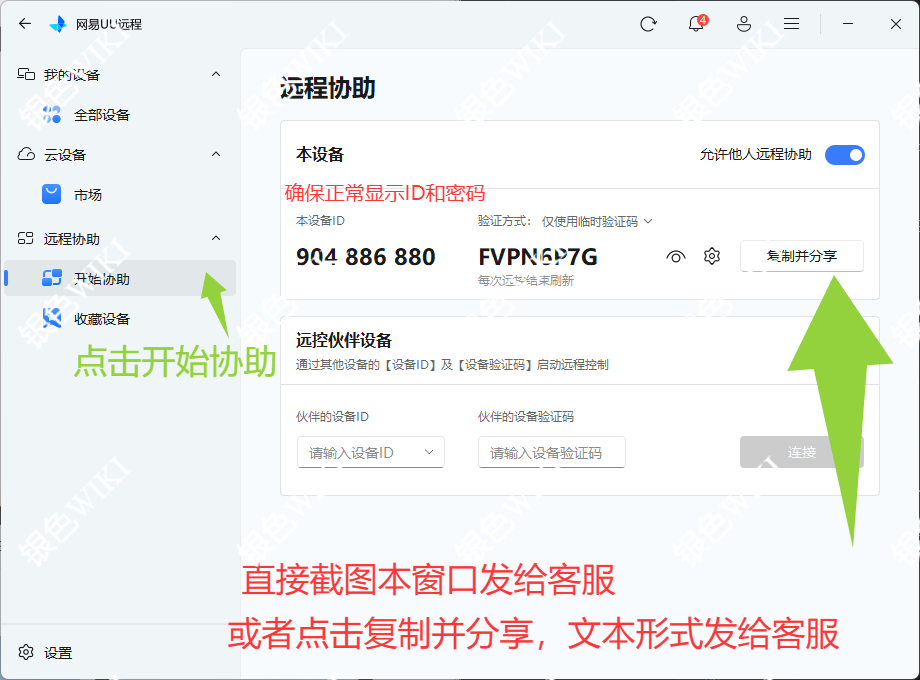

远程协助教程
获取远程协助支持的方法指南
前言
重要提示
- 在请求远程协助前，请确保已阅读并完成了
菜单教程中的所有必备环境设置 - 在寻求协助前，请尽量自己先尝试解决遇到的问题
- 当然如果是新手完全不会的话，可以直接忽略上面 直接发远程来让客服协助安装
- 远程协助可能会涉及屏幕共享，请关闭隐私信息窗口
👉👉 客服联系方式👈👈
准备工作
1. 安装远程协助工具
- UU远程
- ToDesk
UU远程是目前最常用的远程协助工具，操作简单，连接稳定。
下载安装步骤：
- 点击上方链接进入官网
- 在官网下载页面点击**"免费下载"**
- 下载完成后运行安装程序
- 按照向导完成安装
- 安装后启动UU远程
另一个常用的国产远程工具。
2. 准备必要信息
在联系技术人员前，请准备好以下信息：
- 问题描述：清晰说明遇到了什么问题
- 操作步骤：出现问题前你做了哪些操作
- 截图/录屏：如有错误提示，请截图保存
- 已尝试的解决方法：你已经尝试过哪些方法
获取远程协助
步骤一：打开远程工具
启动你选择的远程工具（推荐使用UU远程）。
步骤二：找到识别码和验证码
打开远程工具后，在软件主界面找到：
- 识别码：一串数字，用于对方连接你的电脑
- 验证码：临时密码，每次启动会变化

注意： 验证码可能会自动刷新，请在使用时临时提供。
步骤三：联系技术支持
将以下信息发送给技术支持人员：
- 识别码：
你的识别码数字 - 验证码：
当前验证码 - 问题描述：简要说明遇到的问题
- 已完成的准备：告知已完成的设置步骤
示例消息：